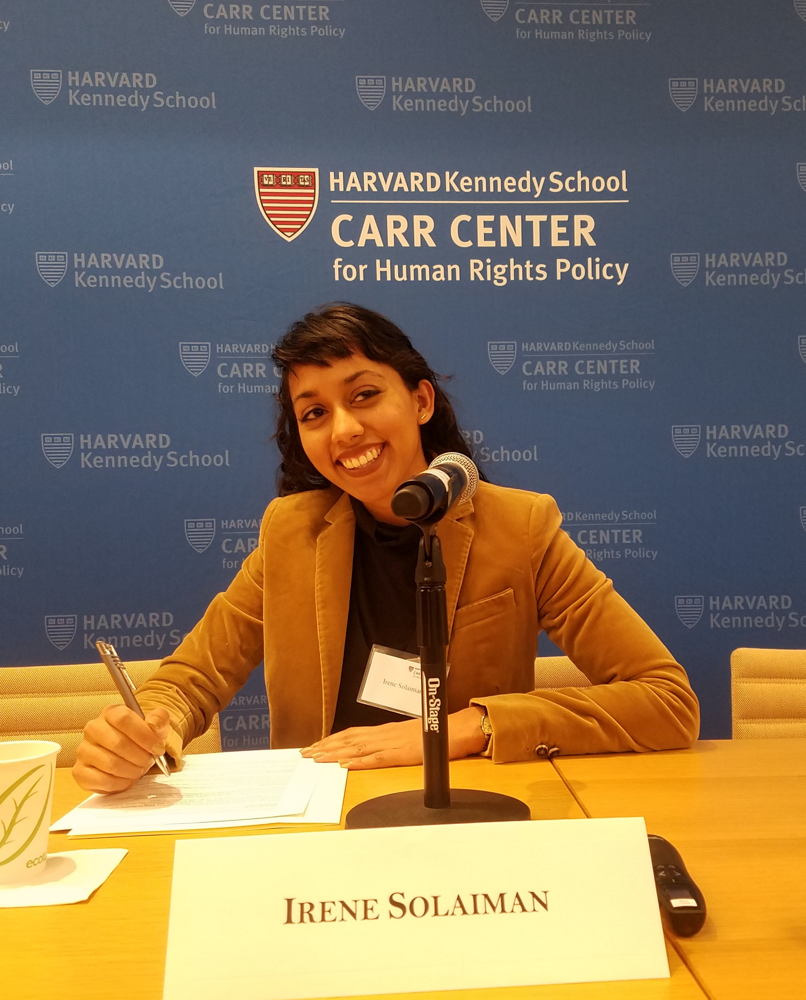

About me

Work
Hugging Face
AI Researcher and Public Policy Manager
Zillow
AI Public Policy Manager
OpenAI
Public Policy Manager, Policy Researcher
Berkman Klein Center for Internet and Society
Fellow
Belfer Center for Science and International Affairs
Project Lead, Defending Digital Democracy
Advising
OECD AI Policy Observatory
Education
Harvard University, John F. Kennedy School of Government
Thesis: Investing in Data Protection: How Industry Can Direct Privacy in AI
University of Maryland, College Park
Banneker/Key Scholar (Full four year merit scholarship)
Self-created degree curriculum with the Individual Studies Program